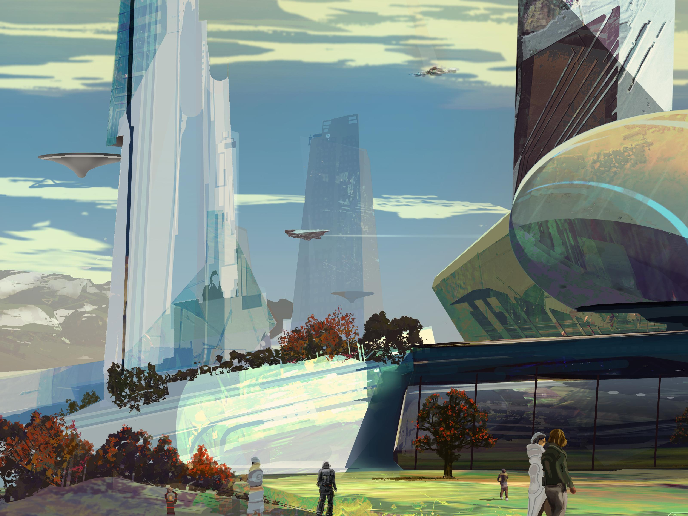

公司起源
始于一个偶然
【历史学家认为，公司真正的起源是一条殖民船。当第一批基于虫洞的恒星际殖民开始时，政府和企业投资者们最热衷的是矿业、能源、航运。只有一个财团投资农业。他们赞助五月花号殖民船，这是对17世纪那艘横渡大西洋的“Mayflower”的致敬。飞船在公元2386年起飞。但出乎意料的是——作为第四只通过虫洞的殖民船，虫洞发生了崩坏并将五月花号送往另一个世界。
殖民船通过虫洞后，发现计划中的“半宜居世界”变成了一个全新的星系：距离地球122光年的霍图斯星系，蒙上帝保佑，五月花号很快在此发现了一颗“过于理想”的行星。原生态极其繁盛。生物多样性丰富，气候稳定，资源丰富，这就是繁荣紫藤资本的总部所在地：长期承诺行星。通过对五月花号飞船的改造，殖民地诞生了第一座完全自循环农业环，它不是田野，而是轨道结构。它的管理者不是农民，而是工程师。殖民者在日志里写下：“真正的独立，从农业开始。”
三十年后，面对重新被开启的虫洞和往日故乡的通信时。殖民地已经建立起一座庞大的拥有工农业的宜居行星。长期承诺行星带来的回报率超过任何殖民项目。通过霍图斯的资源，殖民地很快建立起一家公司获取巨额的人员和技术支持，并收购了奄奄一息的旧发起者，结合双方名称特点的企业被称为：繁荣紫藤资本。从那时起，公司不再是一个支持殖民的附属机构。】

企业结构
精简层级
实体自治
【企业架构采用三层管理层级：控股主体以产量、增长率、资源转换效率等数据为主要指标，并为子公司和友好合作者提供流动性和先进技术支持以及安全保障。恒星区子公司以恒星系为单位，作为单一控股单元，拥有独立财务与能源预算权，负责市场开拓，产品销售和供应链维护。轨道产业实体如独立的轨道殖民地、农业环、生态改造殖民舰等，都可随时剥离或转移。】
【我们相信时间是我们的合伙人。】
【7.5万】亿+
当前合计管理规模（ICA）
【4.7】%
企业成立以来年化净回报
【100】行星+
长期合作伙伴
发展历程
【2386年】
【五月花号殖民船启航】
【2418年】
【繁荣紫藤的建立】
【2552年】
【成功改造荒芜行星普罗米托】
【2667年】